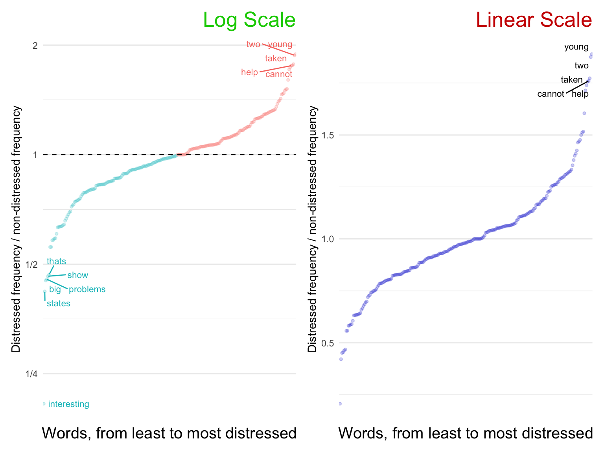
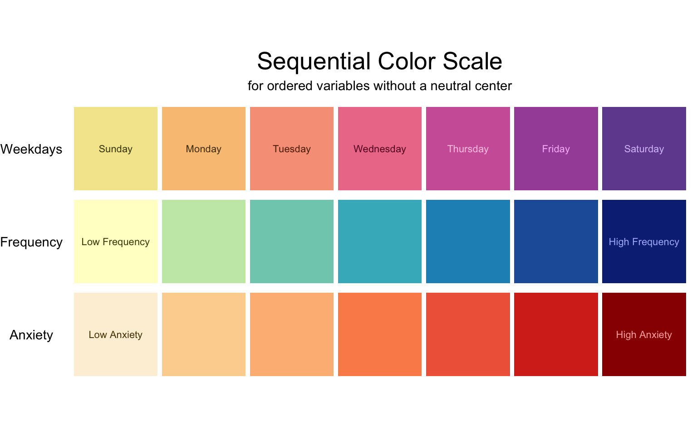

The hardest part of data visualization is identifying a story in the first place. This is especially true in natural language processing—ince language is such a rich source of information, it is sometimes hard to decide what aspect of it to focus on. The stories are hiding in plain sight. The job of the data visualizer is to find them and bring them out into the open.
2.1 A Small, Compelling Story is Better Than a Big, Confusing One
Schwartz et al. (2013) collected 15.4 million Facebook status updates from participants who had filled out a variety of questionnaires on the My Personality application (discussed in Chapter 5). They analyzed the frequencies of millions of words, phrases, and topics as they correlate with gender, age, and personality traits of the author. The resulting paper focused on methodology, but Schwartz et al. (2013) nevertheless understood the importance of telling a good story. Here is their figure 5B:
This is a beautiful data visualization. The story it tells is so clear and simple that it doesn’t need a caption: Older people use “I” less and “we” more. The unstated implication is either that people get less individualistic with age, or that the young people of today are self-centered. Both are excellent stories.
How did Schwartz et al. achieve such a clear story? Let’s take a closer look at some of their choices:
First, out of millions of words, phrases, and topics in their analysis, they chose to focus this visualization on only two. This is the first step of story-telling with data: remove distractions. A small, compelling story is better than a big, confusing one.
Second, they chose not to show the data points themselves, but to represent the overall trends with regression lines. This is a major sacrifice, since it makes the graph much less informative—any good scientist will wonder about the distributions surrounding these lines: How rare are community-oriented 20-year-olds? What about self-centered 60-year-olds? Nevertheless, Schwartz et al. decided that including a scatter plot behind the lines would make the graph too confusing to look at, and distract from the main story.
Third, they chose to use bendy LOESS regression lines, even though the main analysis of the paper was conducted with linear regression. This was a great choice because it makes the story more convincing. The fact that even LOESS lines show near-linear trends is impressive. Even though there are no data points to be seen, those steady lines give the impression that the underlying data are reliable. Also, the the LOESS lines give the viewer the opportunity to notice nuances in the story without distracting from the big picture (it is fascinating that “we” reaches it’s all-time low around the time most people move out of their parents’ house, and not before).
Lastly, let’s take a look at the y axis: What is “Standardized Frequency”? We have an intuitive idea that higher means using the word more and lower means using it less. But this intuitive simplicity did not come easily—it had to be carefully constructed by the authors of the paper. Actually, “Standardized Frequency” is calculated using this formula:
Don’t understand any of this? That’s OK. We’ll cover methods of standardizing word frequencies in Chapter 14. For now, the point is this: Sometimes you have to do something complicated to make something simple. If Schwartz et al. had not performed them, “I” would likely be much higher frequency than “we” at all ages, and the story, which requires the viewer to focus on the slopes of the lines, would be much harder to appreciate.
2.2 Engineer Your Aesthetics
We have just seen in Schwartz et al.’s beautiful data visualization (Section 2.1) that choosing to map the “frequency” variable to the y position aesthetic was not enough. In order to make the story clear, they carefully engineered the scale on which they measured frequency. In their case, this required some complicated standardization tailored to the particular statistics underlying their data. Often though, the solution is much more straightforward.
The remainder of this chapter outlines some common ways to engineer aesthetics that can help make a story clear and intuitive.
2.2.1 Nonlinear Axes
Often a simple log scale is enough to reveal a much clearer presentation of data. The following graph uses data from Buechel et al. (2018), in which participants read news stories, rated their own empathy and distress after reading them, and then described their thoughts in their own words.
This visualization tells a story about the most and least common words in participant’s responses.
library(ggrepel)library(patchwork)distressed_texts_binary_ordered <- distressed_texts_binary %>%# ratio of distressed frequency to non-distressed frequencymutate(distressed_freq_ratio = distressed_count/nondistressed_count) %>%# refactor in descending orderarrange(distressed_freq_ratio) %>%mutate(word =factor(word, levels = word))set.seed(2023)badplot1 <- distressed_texts_binary_ordered %>%ggplot(aes(word, distressed_freq_ratio, label = word)) +geom_point(color ="blue3", size =1, alpha = .2) +geom_text_repel(size =3, data =filter(distressed_texts_binary_ordered, distressed_freq_ratio >1.75)) +labs(title ="Linear Scale",x ="Words, from least to most distressed",y ="Distressed frequency / non-distressed frequency") +scale_y_continuous(breaks =seq(-.5, 2, .5)) +theme_minimal() +theme(plot.title =element_text(color ="red3", hjust =1, size =20),panel.grid.major.x =element_blank(),axis.text.x =element_blank(),axis.ticks.x =element_blank(),axis.title.x =element_text(size =15))set.seed(2023)goodplot1 <- distressed_texts_binary_ordered %>%ggplot(aes(word, distressed_freq_ratio, label = word, color = distressed_freq_ratio <1)) +geom_point(size =1, alpha = .2) +geom_text_repel(size =3, data = distressed_texts_binary_ordered %>%filter(distressed_freq_ratio >1.75| distressed_freq_ratio <1/2),max.overlaps =20) +geom_hline(linetype =2, yintercept =1) +labs(title ="Log Scale",x ="Words, from least to most distressed",y ="Distressed frequency / non-distressed frequency") +scale_y_continuous(breaks =c(2^(-6:6)), trans ="log2", labels =~MASS::fractions(.x)) +guides(color ="none") +theme_minimal() +theme(plot.title =element_text(color ="green3", hjust =1, size =20),panel.grid.major.x =element_blank(),axis.text.x =element_blank(),axis.ticks.x =element_blank(),axis.title.x =element_text(size =15))goodplot1 + badplot1

When plotting ratios, it is almost always a good idea to use a log scale (left). This way, the viewer can compare the largest and the smallest relative values. Without the log scale (right), the smallest values are squished into oblivion.
2.2.2 Ordering Categorical Variables
Take another look at the graph labeled “Log Scale” above, and notice the ordering along the x axis. Words, on their own, are an unordered categorical variable. Nevertheless, in the context of a story, even unordered variables have an order. Ordering the categorical variable along the continuous variable of interest calls attention to the distribution and removes confusion.
library(ggrepel)set.seed(2023)badplot2 <- distressed_texts_binary %>%# ratio of distressed frequency to non-distressed frequencymutate(distressed_freq_ratio = distressed_count/nondistressed_count) %>%ggplot(aes(word, distressed_freq_ratio, label = word, color = distressed_freq_ratio <1)) +geom_point(size =1, alpha = .7) +geom_text_repel(size =3, data = distressed_texts_binary_ordered %>%filter(distressed_freq_ratio >1.75| distressed_freq_ratio < .5),max.overlaps =20) +geom_hline(linetype =2, yintercept =1) +labs(title ="Unordered",x ="Words",y ="Distressed frequency / non-distressed frequency") +scale_y_continuous(breaks =c(2^(-6:6)), trans ="log2", labels =~MASS::fractions(.x)) +guides(color ="none") +theme_minimal() +theme(plot.title =element_text(color ="red3", hjust =1, size =20),panel.grid.major.x =element_blank(),axis.text.x =element_blank(),axis.ticks.x =element_blank(),axis.title.x =element_text(size =15))goodplot2 <- goodplot1 +labs(title ="Ordered")goodplot2 + badplot2
2.2.3 Color Scales
We have already seen how a data visualizer can clarify a story by spatially ordering a categorical variable. A carefully tailored color scale can be an even more powerful communicator than an x or y axis. This is because color, even though it is usually treated as a single aesthetic, actually has many dimensions: luminosity, saturation, redness, blueness, etc.
The first step in choosing a color scale for any variable is to consider whether the thing being measured is diverging, sequential, or qualitative.
Diverging scales measure something with a neutral center. This center is often represented by zero, but beware! Sometimes a neutral center is 4 on a seven point Likert scale (see “Agreement” in the figure below). When dealing with fractions, the neutral center is 1 (see “Frequency Ratio” in the figure below).
When applying diverging scales, keep in mind any associations people might have with the colors involved. For example, red should always be bad and blue/green good (see the plot in Section 2.2.2, in which red = distress = bad).
Sequential scales measure something that has an order, but no neutral center. Often, one side of the scale is at zero, so that the scale goes from nothing to something. In these cases, the appropriate color scale will represent amount with luminosity, where zero is the lightest (see “Frequency” and “Anxiety” in the figure below). This way, the lower amounts have lower contrast against the white background of the plot (if using a non-white plot background, make sure the low end of the scale matches).
Sometimes sequential scales do not measure amount, as in “Weekdays” in the figure below. Weekdays have an order—rom the beginning of the week to the end—ut it would be a mistake to use a scale with one side blending in to the background and the other intensely dark, since that would suggest that Thursday is somehow ‘more’ than Wednesday. Likewise, there is no neutral center (there’s nothing neutral about Wednesday). In such case, the scale should go from one noticeable color to another. The chart below uses a palette reminiscent of sunset to give the impression of time passing.

To emphasize the point about weekdays, consider the following two versions of the same graph (data taken from 1000 top Reddit communities):
Both versions are confusing to look at (these data might be better represented as a heat map), but the one with the sequential color scale is much better. Whereas the qualitative scale requires the viewer to look constantly back and forth between the legend and the plot, the sequential scale maps to an intuitive understanding of beginning-of-week vs. end-of-week.
We have seen that many seemingly unordered variables should be ordered in the context of a story. Nevertheless, some variables are truly qualitative. In these cases, the color scale should maximize contrast between neighboring values without accidentally suggesting an order. For example, “Parts of Speech” in the figure below are all soft pastel colors. If some were darker or more saturated, it might suggest that there is an important difference between the groups.
Again, keep in mind any associations people might have with colors involved. For example, countries should be represented by colors that appear in their flags. This is of course sometimes difficult—all of the countries in the figure below have red in their flag, and all but China have blue and white. Nevertheless, try your best. The Wikipedia page for national colors was helpful in making the chart below.
2.2.4 Accent colors
Because color has many dimensions, it can sometimes be used to represent two scales at the same time. One common tactic is to use luminosity or saturation to emphasize certain values and de-emphasize others. Below, we have redrawn the frequency ratio plot from earlier in this chapter (Section 2.2.1) to tell a story about two words in particular. By using accent colors to emphasize the two words of interest, we remove distractors while maintaining the broader context of the story.
set.seed(2023)distressed_texts_binary_ordered %>%ggplot(aes(word, distressed_freq_ratio, label = word, color = distressed_freq_ratio <1)) +geom_point() +geom_hline(linetype =2, yintercept =1) +scale_color_discrete(type = colorspace::lighten(c("#F8766D", "#00BFC4"), .7)) +geom_text_repel(size =3, data = distressed_texts_binary_ordered %>%filter(distressed_freq_ratio >3.6| distressed_freq_ratio < .2),max.overlaps =20) +guides(color ="none") +new_scale_color() +geom_point(aes(color = distressed_freq_ratio <1), size =3,data = distressed_texts_binary_ordered %>%filter(word %in%c("i", "we"))) +geom_text_repel(size =4, data = distressed_texts_binary_ordered %>%filter(word %in%c("i", "we")),max.overlaps =20) +labs(title ='"We" is a Sign of Distress',x ="Words, from least to most distressed",y ="Distressed frequency / non-distressed frequency") +scale_y_continuous(breaks =c(2^(-6:6)), trans ="log2", labels =~MASS::fractions(.x)) +guides(color ="none") +theme_minimal() +theme(plot.title =element_text(hjust = .5, size =18),panel.grid.major.x =element_blank(),axis.text.x =element_blank(),axis.ticks.x =element_blank())
2.2.5 Aspect Ratios
Simchon et al. (2021) investigated whether COVID-19 concern among New Yorkers resulted in higher or lower levels of certainty, as expressed in language on Twitter. Their story: Higher concern leads to greater expressions of certainty, since people use certainty as a coping mechanism. Here is their Figure 3, reproduced in three different aspect ratios:
Which aspect ratio is the right one? A good aspect ratio is one that communicates the meaning of the variables in question. Since months are spread out over time (by definition), it makes sense to make the x-axis longer so that viewers have the feeling of time passing as they scan it. But it shouldn’t be too wide, since the aspect ratio should also emphasize important differences in position (here, the positive slope of both lines). Something in between B and C seems appropriate. Indeed, this is the figure printed in the final paper:
As always, press the “View Source” button below to see the hidden code blocks in this chapter.
Buechel, S., Buffone, A., Slaff, B., Ungar, L. H., & Sedoc, J. (2018). Modeling empathy and distress in reaction to news stories. CoRR, abs/1808.10399. http://arxiv.org/abs/1808.10399
Schwartz, H. andrew, Eichstaedt, J. C., Kern, M. L., Dziurzynski, L., Ramones, S. M., Agrawal, M., Shah, A., Kosinski, M., Stillwell, D., Seligman, M. E. P., & Ungar, L. H. (2013). Personality, gender, and age in the language of social media: The open-vocabulary approach. PLOS ONE, 8(9), 1–16. https://doi.org/10.1371/journal.pone.0073791
Simchon, A., Turkin, C., Svoray, T., Kloog, I., Dorman, M., & Gilead, M. (2021). Beyond doubt in a dangerous world: The effect of existential threats on the certitude of societal discourse. Journal of Experimental Social Psychology, 97, 104221. https://doi.org/https://doi.org/10.1016/j.jesp.2021.104221